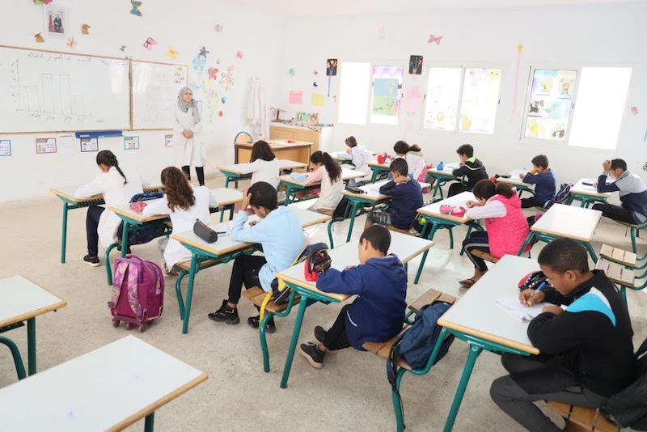

Le Système Éducatif Pendant et Après Colonisation
L'éducation au Maroc est un sujet important dans la situation linguistique du pays.
Avant la colonisation, il y avait un accent sur l'éducation islamique alors l’enseignement était en arabe et s'était focalisé sur les textes religieux. Pendant la période du protectorat, le système éducatif était ségrégué et pas accessible pour tous. Les enfants français et les marocains d'élites allaient aux écoles spécifiques. Les écoles islamique et juives ont été séparées des écoles européennes, et les élèves musulmans marocains n'avaient pas autant d'opportunités que les enfants européens au Maroc. Ils avaient des désavantages en cherchant l’enseignement supérieur. Ils avaient par exemple des barrières d’argent et de langue. En fait, seulement 51 étudiants musulmans marocains ont obtenu leur diplôme de l’enseignement supérieur au protectorat dans le décennie entre 1926 et 1936.
Pendant cette période coloniale, quelques nationalistes marocains ont fondé des écoles en opposition aux les systèmes éducatifs coloniaux. Ces écoles, appelées «al madaris alhurra» enseignaient l’arabe. Ils restaient très petits et ils n’avaient pas de grand effet sur les systèmes du pays, mais ils sont un exemple de la résistance linguistique dans l'éducation. Après l'indépendance marocaine, le gouvernement a créé un système d'éducation gratuite et obligatoire, et il se focalisait sur l’arabisation du système éducatif pour renverser l’influence de la langue française. Cette mission a eu une réaction négative sur la population amazigh parce qu’elle n’a pas réussi à donner du statut à la langue autochtone.
Dans la période en cours, il y a de grandes inégalités socio-économiques et il y a un débat sur les langues d’enseignement. Le format du système éducatif se compose de six ans d'école primaire, trois de l'enseignement intermédiaire, et 3 de l’enseignement secondaire. Après, si l’enfant peut y aller, il y a trois ans d'enseignement supérieur. Dans ce système, le taux des enfants qui sont diplômés n’est pas tellement monté. En fait, près de la moitié des enfants marocains ne terminent pas leur secondaire. Sur le sujet de la socioéconomie, il y a des écoles publiques accessibles pour la plupart des enfants. Les enfants d'élites ont les moyens de payer pour les écoles privées ou des écoles à l’étranger. Environ 17% des élèves marocains sont dans des écoles privées. Un exemple des écoles privées est «la mission,» l’enseignement elite en langue française.
La classe joue un rôle important dans l'éducation. Dans le système éducatif, les élèves étudient en arabe standard ou en français, et parfois ils apprennent l’anglais ou l’espagnol. Le français, comme c’est déjà expliqué, est un symbole de richesse au Maroc. Par conséquent, avoir accès à l’enseignement français peut aider une élève dans sa réussite professionnelle.
L’apprentissage, de plus, est souvent dans les langues qui ne sont parlées que chez les élèves. Alors, en février 2024, Chakib Benmoussa, le Ministre de l'Éducation nationale a proposé l’introduction de la langue amazigh, ou berbère, dans les écoles. Maintenant, seulement trois cent mille élèves marocains apprennent cette langue, et le ministre a déclaré que d’ici 2030, l’amazigh sera enseigné à 4 millions d’étudiants. Cette déclaration est une moment important dans le mouvement à donner de l’attention à l'amazigh.

